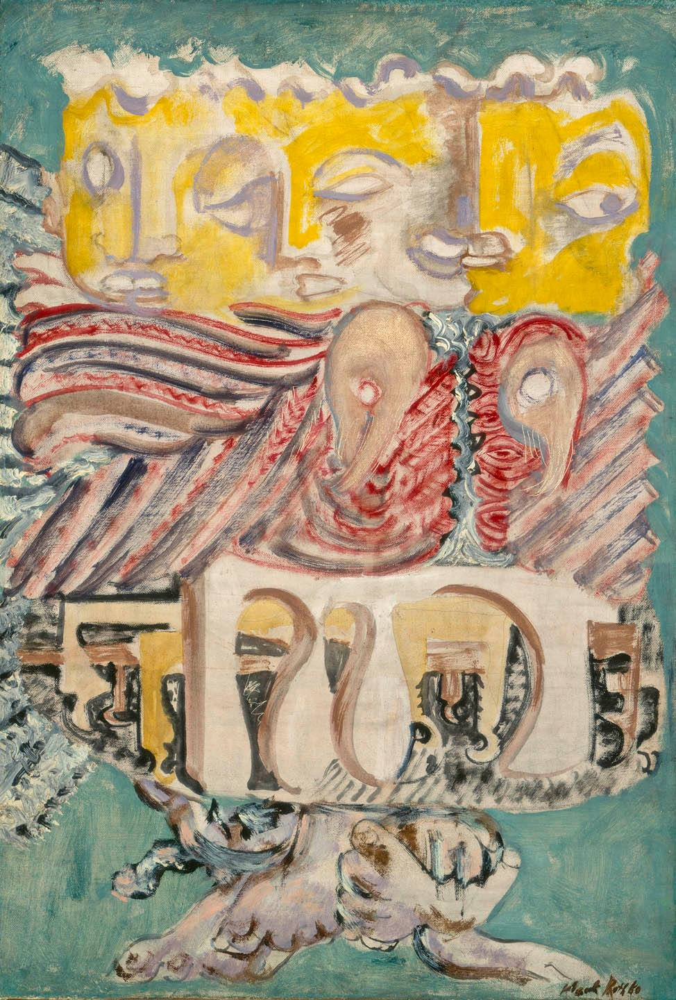
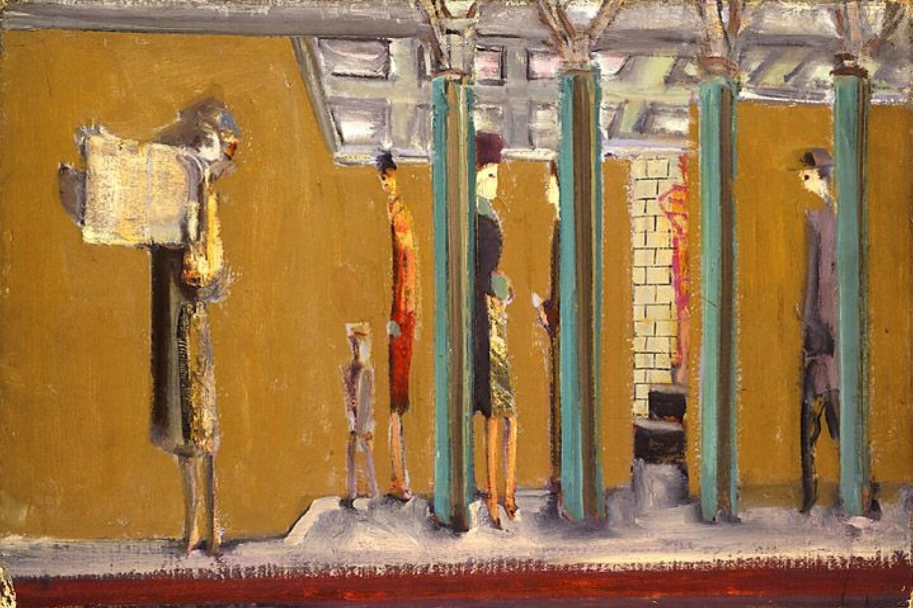
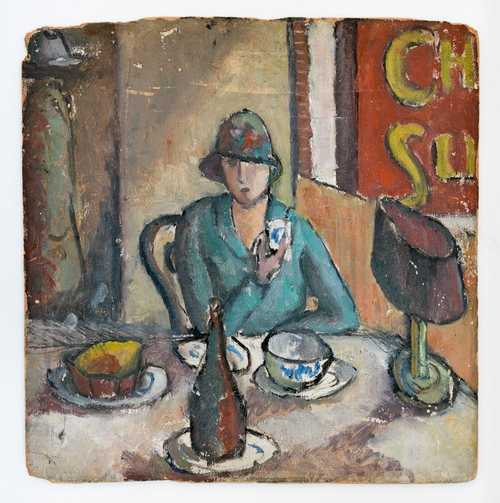
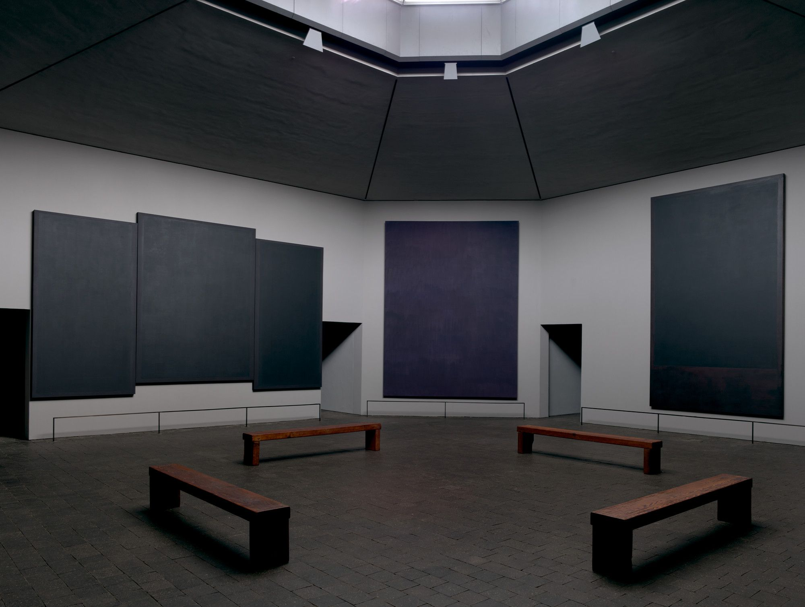

" บริษัท สไมล์ลี่ แอสซิสแตนซ์ (ประเทศไทย) จำกัด Smiley ให้บริการช่วยเหลือฉุกเฉินตลอด 24 ชั่วโมง บริการคอลเซ็นเตอร์ และ บริการด้านเทคนิคด้วยประสบการณ์มากกว่า 20 ปี "
“ 1. Mark Rothko ”
Mark Rothko (มาร์ก รอทโก) : ศิลปินผู้ได้ขึ้นชื่อว่าสามารถวาด "อารมณ์" ของมนุษย์ได้
ประวัติโดยย่อของ : มาร์ก รอทโก (เดิมชื่อ มาร์คุส ยาโคฟเลวิช โรธโควิตซ์) เกิดเมื่อวันที่ 25 กันยายน พ.ศ. 2446 ในเมืองเดากัฟปิลส์ ประเทศลัตเวีย ครอบครัวของเขาอพยพไปยังสหรัฐอเมริกาเมื่อเขาอายุ 10 ขวบ เขาเติบโตขึ้นในนิวยอร์กซิตี้ และเริ่มต้นอาชีพศิลปินในช่วงทศวรรษ 1920
รอทโก้เสียชีวิตด้วยการฆ่าตัวตายเมื่อวันที่ 25 กุมภาพันธ์ พ.ศ. 2513 เขาถือเป็นหนึ่งในศิลปินที่สำคัญที่สุดของศตวรรษที่ 20 ผลงานของเขามีอิทธิพลต่อศิลปินรุ่นหลังมาอย่างมาก และยังคงได้รับความนิยมจนถึงปัจจุบัน
ผลงานต่างๆของ Mark Rothko...
Mark Rothko, The Omen of the Eagle, 1942
Mark Rothko, Untitled (subway), c. 1937
Mark Rothko, Composition I, 1931
ผลงานที่ชื่นชอบเป็นการส่วนตัว...
Mark Rothko, Composition I, 1931
"เป็นผลงานสุดท้ายก่อนที่เขาจะเสียชีวิตลง เป็นภาพที่ใช้สีที่มืดมนลงอย่างชัดเจน"
หน้าต่อไป